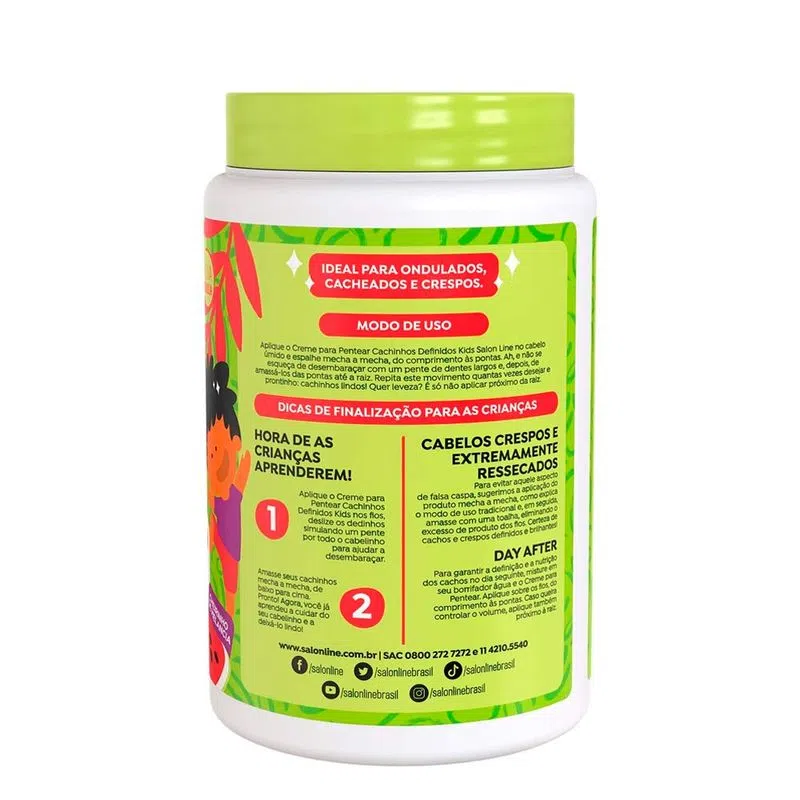
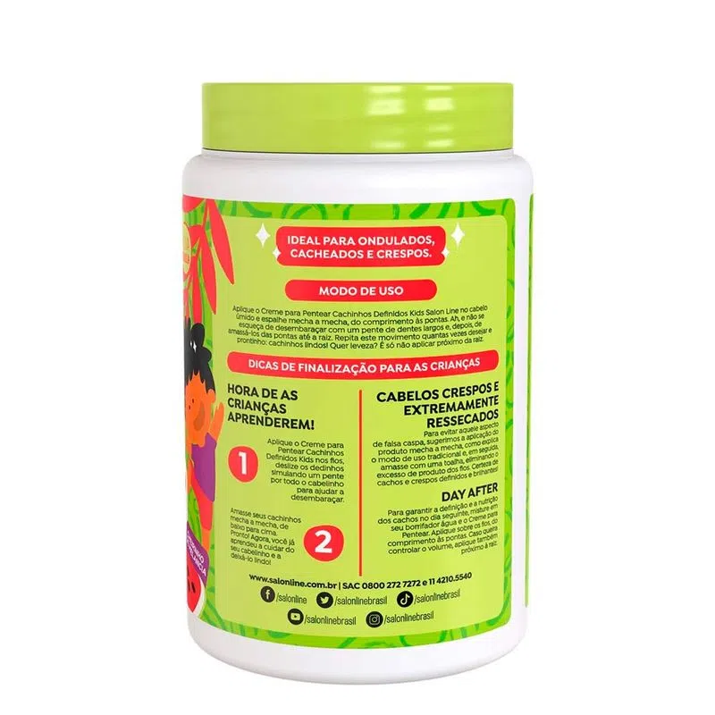

Creme de pentear Salon line melancia
À vista: R$ 47,00
valor parcelado do produto
Informações do Produto
Creme Para Pentear Salon line Kids Cachinhos Definidos 1kg Melancia Cuidado, proteção e cheirinho de melancia: o Creme para Pentear Cachinhos Definidos traz fórmula com propriedades que hidratam os fios e controlam o frizz dos pequenos, além de dar brilho e definição. - Para quais tipos de cabelo? Cabelos ondulados, cabelos cacheados e cabelos crespos. - Qual a indicação? Cabelos secos, com frizz e sem brilho. - Pode usar a partir de quantos anos? A partir de 03 anos. Qual a melhor forma de usar? Aplique o Creme para Pentear Cachinhos Definidos no cabelo úmido e espalhe mecha a mecha, do comprimento às pontas. Desembarace com um pente de dentes largos e, em seguida, amasse de baixo para cima. Repita este movimento quantas vezes desejar. Dicas de uso Para evitar aquele aspecto de falsa caspa no cabelo, aplique o produto mecha a mecha e, em seguida, amasse com uma toalha, eliminando o excesso de produto dos fios.